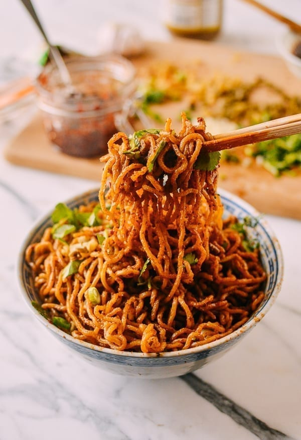

Wuhan's breakfast noodle: chewy alkaline noodles under a slick of sesame paste, chili oil, and pickles, from The Woks of Life. No soup, no sauce pooling in the bowl — the paste clings, or you thinned it wrong.
Stir the sesame oil into the sesame paste a little at a time until it loosens into a smooth slurry. Add both soy sauces and the sugar, then thin with warm water until it pours like heavy cream. Salt to taste, set aside.
Prep every topping and line them up. Once the noodles land, this becomes a speed game — hot dry noodles wait for no one.
Boil the noodles one minute short of the package time — they should still have real chew. (The Wuhan street move: par-cook, oil, and fan them cool ahead of time, then flash-reheat in boiling water for 30 seconds to order.)
Drain hard — "dry" is half the name — shake off every drop, and toss the noodles in a big bowl with the remaining sesame oil so they don't clump.
Pour on the sauce, then pile on zha cai, pickled beans, garlic, chili oil, cilantro, scallions, and the vinegar. Toss furiously and eat immediately, while everything is still hot and the noodles still snap.